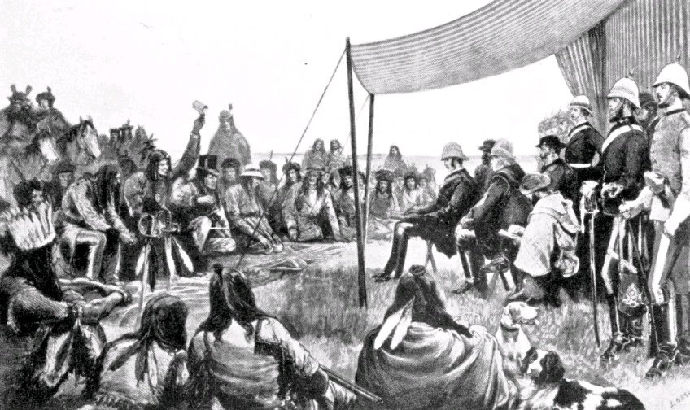

Treaty 1, signed in 1871 between the Canadian government and several First Nations in southern Manitoba, continues to influence relationships today. The Canadian government provides services like education, healthcare, and annual payments to First Nations communities as part of the treaty obligations. However, many Indigenous peoples feel that not all promises have been fully honored. Efforts are ongoing to improve these relationships through discussions and projects that aim to respect the original spirit of the treaty. One significant development is the creation of Naawi-Oodena, an urban reserve in Winnipeg. This land was returned to Treaty 1 First Nations and is being developed into a community space with homes, businesses, and cultural centers. It's an example of how First Nations are working to reclaim land and build communities that reflect their needs and traditions.
Read more about thisImplementation Of The Treaty Today

Informative images
